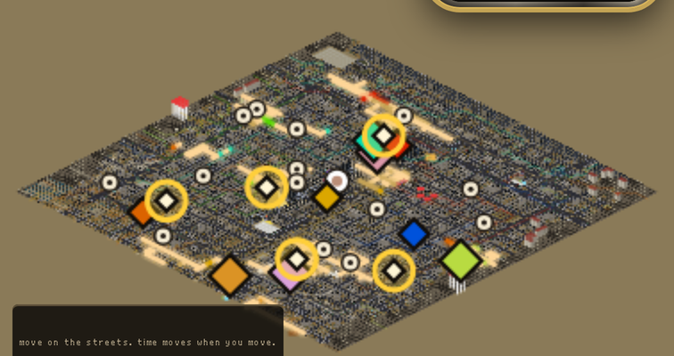
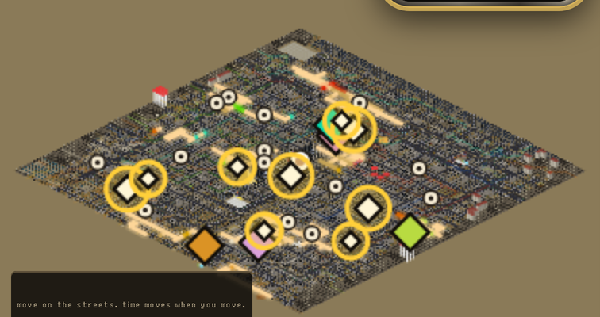
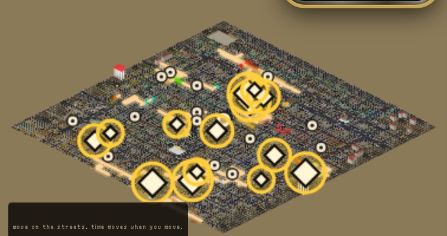

START OF AN ACT: ONLY THE CAMPS ARE OPEN

5 parts, 1,949 blocks, 21 percent
The most you could hold at the start of an act: all 5 camps. A gold ring is a part that is yours.
The real map, the real base positions, nothing painted on the ground.
A THIRD IN: THE TOWNS OPEN TOO

9 parts, 4,057 blocks, 44 percent
Camps and towns: 9 parts, 44 percent. Just under half of Vegas, and the fortresses are still shut.
TWO THIRDS IN: THE FORTRESSES OPEN

14 parts, 9,216 blocks, all of it
Every part. Half of Vegas is all the camps, all the towns and one fortress. Nobody has to take
the biggest one to get there.
WHAT THIS IS. This shows the most you could hold at each point if you took everything that is open. It is
not a path anyone has to walk, and nothing in the game can take a part yet: the fight will, and so will a contract,
a boss or a deal. The rings are NOT IN A TAB YET on the live map; the picture above is the game's real map with the
list drawn on top. Thumbs up if a base that is whole parts, growing to about half of Vegas, is the right shape.
Thumbs down and tell me what is wrong.